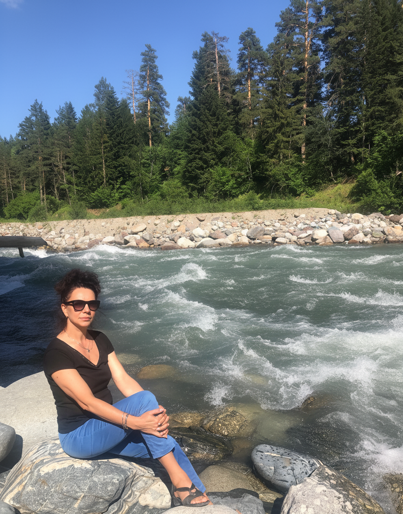

Опыт в фармации усиливает внимательность к медикаментам, анализам и ограничениям пациента.
Нутрициолог с медицинской базой
Помогаю вернуть в баланс вес, сахар и энергию
За 29 лет в фармации я слишком часто видела, как люди годами борются со следствием, а причина остаётся без внимания. Поэтому в работе я помогаю понять, что именно выводит организм из равновесия, и мягко выстроить питание, режим и опору на анализы без жёстких диет.
- Если тянет на сладкое и вес не уходитСобираем режим без постоянных срывов и качелей аппетита.
- Если тревожат сахар и анализыСмотрим на питание, сон, стресс и образ жизни в комплексе.
- Если не хватает энергииИщем, что забирает ресурс: ритм дня, дефициты, перегрузка, нерегулярное питание.
- Если нужен anti-age подходРаботаем на качество жизни, ясность головы, устойчивость и активное долголетие.
При установленном диагнозе работа строится в контакте с лечащим врачом и не заменяет медицинское лечение.

Фундаментальное образование сочетается с дополнительным обучением по диабету и age management.
Без запугивания и крайностей: пошаговая работа под реальную жизнь, а не под идеальную схему.
Когда стоит обратиться
Вам сюда, если вы узнаете себя хотя бы в части этих сигналов
Если вы узнаёте себя в нескольких пунктах сразу, стоит смотреть на состояние комплексно: питание, режим, стресс, восстановление и показатели анализов.
Вес держится или растет, даже если вы стараетесь
Разбираем не только калории, но и режим питания, сон, стресс и метаболическую нагрузку.
Постоянно тянет на сладкое и перекусы
Смотрим, почему не хватает насыщения и устойчивой энергии, и как стабилизировать питание без насилия над собой.
Анализы по сахару или инсулину вызывают тревогу
Помогаю упорядочить картину и понять, с чего реально начать при преддиабете и метаболических рисках.
Не хватает энергии, сна и ясности
Усталость, сонливость и туман в голове часто связаны не с одной причиной, а с их связкой.
Есть ощущение, что организм стареет быстрее
Anti-age в моем подходе - это питание, ритм жизни, метаболическая устойчивость и долгий ресурс.
Нужен не просто список продуктов, а логика действий
Перевожу сложную картину состояния в понятный план: что делать сейчас и на что не тратить силы.
Что вы получите
Вместо хаоса из советов вы получаете понятную систему
Моя задача - помочь вам увидеть полную картину состояния, определить приоритеты и выстроить понятный план действий без перегруза.
Что влияет на вес, сахар, аппетит, сон, энергию и общее самочувствие именно у вас.
Не десятки правил сразу, а последовательность действий, которую можно встроить в реальную жизнь.
Без жестких диет, постоянных запретов и чувства вины из-за еды.
Смотрим на анализы, ритм дня, симптомы, привычки и динамику, а не только на цифру на весах.
С какими запросами работаю
Основные направления работы
Работаю с запросами, где питание, образ жизни и восстановление напрямую влияют на самочувствие, показатели анализов и качество жизни.
Инсулинорезистентность и преддиабет
Подходит тем, кто видит тревожные маркеры по сахару, замечает тягу к сладкому и хочет снизить риски заранее.
Диабет 2 типа и образ жизни
Помогаю выстроить питание, ритм дня и бытовые привычки так, чтобы поддерживать более устойчивое состояние вместе с врачом.
Если хочется снижать вес без срывов
Работаем не только с тарелкой, но и с насыщением, режимом, стрессом, восстановлением и причинами набора веса.
Энергия, сон, восстановление и anti-age
Для тех, кто хочет не просто похудеть, а сохранить ясность головы, устойчивость и качество жизни в долгую.
Как проходит работа
Как проходит работа
Формат работы можно адаптировать под запрос. Ниже - базовая логика взаимодействия, которую затем можно уточнить по длительности, стоимости и формату сопровождения.
Запрос и первичная ориентация
Определяем, что беспокоит сильнее всего: сахар, вес, аппетит, сон, усталость или возрастные изменения.
Смотрим на картину целиком
Рацион, режим, симптомы, образ жизни, стресс и уже имеющиеся анализы собираются в одну систему.
Собираем приоритетный план
Фиксируем, с чего начать в первую очередь, чтобы не перегружать человека десятком новых правил сразу.
Корректируем по динамике
Подход не высечен в камне: по мере изменения самочувствия и режима шаги уточняются и упрощаются.
Почему мне доверяют
Почему мне доверяют
Сочетаю медицинскую базу, опыт в фармации и современный нутрициологический подход к питанию и образу жизни.
Этот опыт дал не только профессиональную дисциплину, но и трезвый взгляд: симптом не всегда равен причине.
Медицинская база сочетается с профильной нутрициологией, темами диабета, age management и активного долголетия.
- Пишу о симптомах инсулинорезистентности, гликации, возрасте, сне и питании.
- Разбираю темы, которые реально волнуют людей, а не только эстетическую сторону веса.
- Объясняю сложные состояния человеческим языком, без давления и запугивания.

Я нутрициолог с высшим медицинским образованием и 29-летним опытом в фармации. В работе опираюсь на анализы, образ жизни, питание и реальные бытовые привычки, а не только на список разрешенных и запрещенных продуктов.
Telegram-канал
О чем пишу в Telegram
В канале делюсь материалами о метаболизме, сахаре, питании, сне, восстановлении и активном долголетии.
Инсулинорезистентность и сигналы, которые легко пропустить
Тяга к сладкому, нестабильный аппетит, отечность, набор веса и связанные гормональные сигналы.
 Подача без медицинского пафоса, но с конкретикой.
Подача без медицинского пафоса, но с конкретикой.
Сон, стресс и нейромедиаторы
В канале есть темы про дофамин, серотонин, окситоцин и мелатонин - это показывает системный взгляд на ресурс человека.
 Полезно для тех, кто приходит не только с весом, но и с истощением.
Полезно для тех, кто приходит не только с весом, но и с истощением.
Активное долголетие и anti-age
Темы гликации, преждевременного старения и питания для ресурса расширяют аудиторию за пределы запроса "сбросить вес".
 Темы о возрасте, ресурсе и профилактике.
Темы о возрасте, ресурсе и профилактике.
Документы и обучение
Образование и дополнительное обучение
Здесь можно показать документы, подтверждающие образование и повышение квалификации.
 Age management
Age management
 Сахарный диабет
Сахарный диабет
 Практикум по долголетию
Практикум по долголетию
 Функциональное состояние тела
Функциональное состояние тела
FAQ
Частые вопросы
Ответы на вопросы, которые чаще всего возникают перед первой консультацией.
Это только про похудение?
Нет. Коррекция веса - лишь часть работы. Основной акцент здесь на метаболическом здоровье, устойчивой энергии, сне, сахаре и качестве жизни в долгую.
Если у меня уже есть диагноз?
При установленном диагнозе работа идет в связке с лечащим врачом. Нутрициологический подход помогает выстроить питание и образ жизни, но не заменяет лечение.
Будут ли жесткие диеты?
Подход строится на реалистичных изменениях. Цель - создать систему, которую можно выдерживать, а не сорваться через неделю.
Нужны ли анализы заранее?
Если анализы уже есть, их можно использовать как часть общей картины. Если нет, сначала оценивается ситуация и только потом определяется, что действительно важно.
Подойдет ли это тем, кто пришел из anti-age темы?
Да. В Telegram-канале и в самой работе большая часть тем связана не только с весом, но и с возрастными изменениями, ресурсом и профилактикой.
С чего начать, если пока не готов(а) к консультации?
Самый мягкий вход сейчас - Telegram-канал. Он дает понимание тона, глубины и тем, с которыми работает Екатерина.
Запись на консультацию
Обсудим ваш запрос
Напишите, если хотите уточнить формат работы, стоимость, ближайшие даты и понять, какой вариант консультации вам подходит. Здесь должен быть реальный способ записи и короткое описание первого шага.